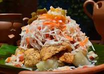

Vigoron

What is Vigoron?
A simple yet flavorful dish, Vigorón is often served as street food in Nicaragua. It combines boiled yuca (cassava) with a tangy cabbage salad and crispy pork chicharrón.
Ingredients
- 1 pound yuca (cassava), peeled and cut into chunks
- 1/2 pound pork chicharrón (fried pork rinds)
- 2 cups finely shredded cabbage
- 1 tomato, finely chopped
- 1 onion, finely chopped
- 1 lemon, juiced
- 1 tablespoon vinegar
- Salt and pepper to taste
Steps
- Boil the yuca: In a large pot, boil yuca in salted water until tender (about 20-30 minutes). Drain and set aside.
- Prepare the salad: In a bowl, mix shredded cabbage, tomato, onion, lemon juice, vinegar, salt, and pepper. Toss well and let sit for a few minutes to absorb the flavors.
- Assemble the dish: On a banana leaf or plate, place a portion of boiled yuca, top it with the cabbage salad, and add a generous amount of pork chicharrón.
- Serve: Enjoy the Vigorón while the yuca is still warm and the chicharrón is crunchy.